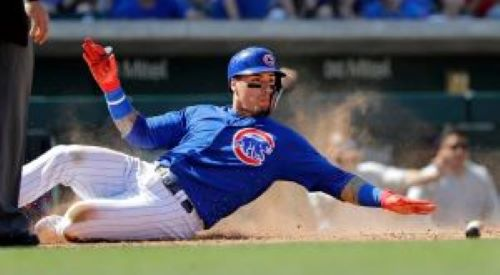

Javier Baez

Javier Baez was born in Bayamon, Puerto Rico in December 1, 1992 He is currently 29 years old. Javier Baez moved to the United States in 2005, to play baseball at Arlington Country Day School in Jacksonville Florida. Later on Javier Baez would go to play for the Chicago Cubs being the 9th pick of the 2011 amateur draft.

Javier Baez has won many awards as an MLB player. Javier has been a 2x All-Star, World Series champ, recieved the Gold Glove Award, and many more. He earned the nickname "El Mago" which means The Magician for the magical way he plays in the MLB as shown by the many plays that he has made on the field.